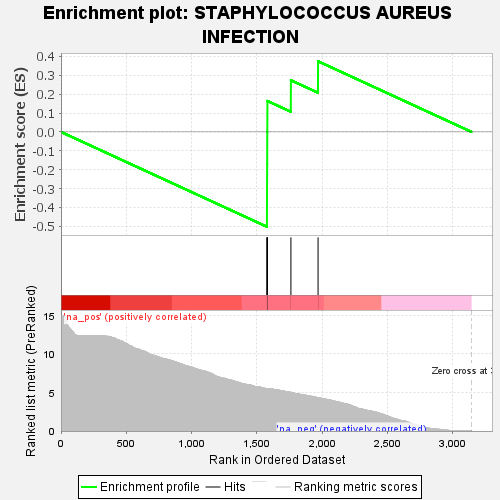
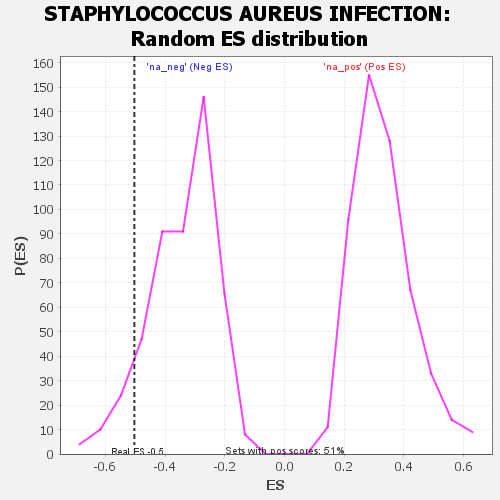

| | | Dataset | GSEA RNK clr Maaslin2 MucosalvsLuminal KO - DistalColon.rnk |
| Phenotype | NoPhenotypeAvailable |
| Upregulated in class | na_neg |
| GeneSet | STAPHYLOCOCCUS AUREUS INFECTION |
| Enrichment Score (ES) | -0.5027079 |
| Normalized Enrichment Score (NES) | -1.4723059 |
| Nominal p-value | 0.092402466 |
| FDR q-value | 0.2259606 |
| FWER p-Value | 0.989 |
Table: GSEA Results Summary

Fig 1: Enrichment plot: STAPHYLOCOCCUS AUREUS INFECTION
Profile of the Running ES Score & Positions of GeneSet Members on the Rank Ordered List

Fig 2: STAPHYLOCOCCUS AUREUS INFECTION: Random ES distribution
Gene set null distribution of ES for STAPHYLOCOCCUS AUREUS INFECTION